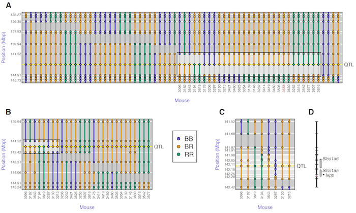

Tian J, Keller MP, Oler AT, Rabaglia ME, Schueler KL, Stapleton DS, Broman
AT, Zhao W, Kendziorski C, Yandell BS, Hagenbuch B, Broman KW,
Attie AD (2015)
Identification of the bile acid transporter Slco1a6 as a candidate gene that broadly
affects gene expression in mouse pancreatic islets.
Genetics 201:1253-1262



Figure 4. — Fine-mapping of the islet chromosome 6 eQTL. A: initial SNP genotypes of the 52 mice with recombination events in the 10 Mbp region around the QTL, along with their inferred QTL genotypes (shown at the center of the inferred interval). The highlighted box indicates 29 mice with recombination events flanking the QTL. B: Additional genotypes on five markers in the QTL interval, for 28 of the 29 mice with recombination event flanking the QTL. The highlighted box indicates eight mice with recombination event flanking the QTL. C: Additional genotypes in the QTL interval, for eight mice with recombination events flanking the QTL. The QTL interval is reduced to 298 kbp (141.979 – 142.277 Mbp), a region containing three genes (D).